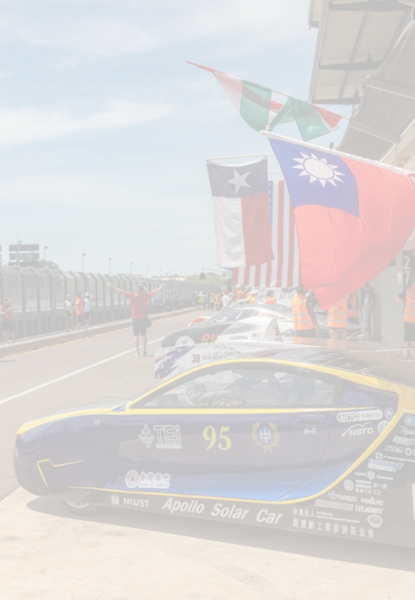
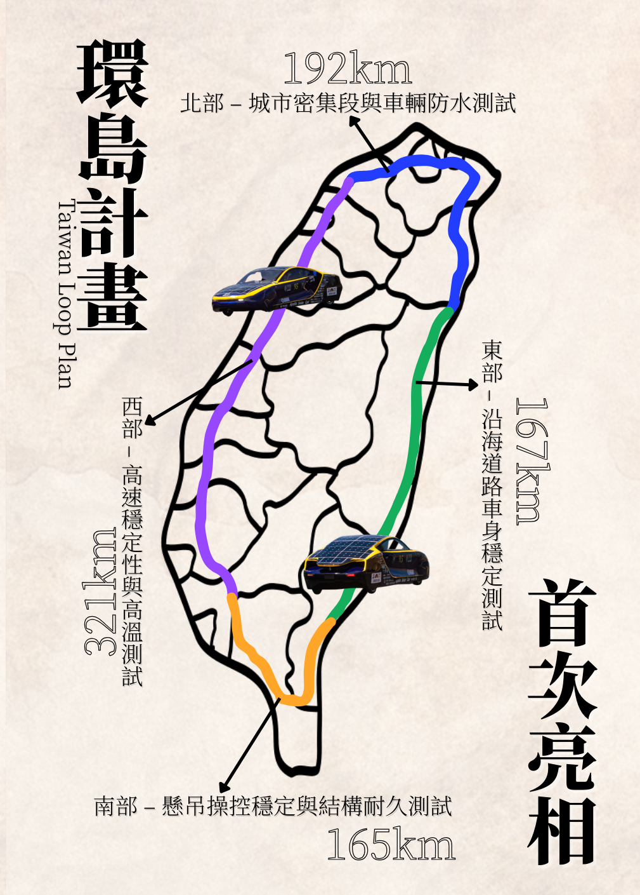

NKUST APOLLO
TAIWAN LOOP PROJECT

Apollo IX 環島計畫 - 用太陽寫下一段繞行台灣的旅程
Apollo IX 環島計畫，不只是一次行駛挑戰，更是一場將太陽能車從競賽場域推向真實道路的實證行動。 作為團隊第九代車款，Apollo IX 將以環島行駛的方式，驗證太陽能車在多變地形、日照條件與實際交通環境中的續航能力與系統穩定性， 證明綠能移動技術不僅能在賽道上競速，更能走入生活、走遍城市。
全球太陽能電動車目前仍以學術研究與國際賽事為主要發展場域，早期車型多為三輪、單人座之競賽形式。 然而隨著技術成熟，趨勢正逐漸朝向四輪、雙人座之城市型太陽能車邁進，具備未來商業化潛力。
此計畫不僅是太陽能車的實證旅程，更是 Apollo X 的資料起點。 透過跨越不同地形與氣候區段之環島測試，完整蒐集發電效率、能源消耗、行駛阻力等真實數據，並回饋驗證前期模擬模型。 所有資料將導入 Apollo X 的 AI 行駛策略設計流程，作為未來「太陽能自適應智慧移動系統」的推進引擎。

全台四大測試區段與里程規劃
本計畫以高雄為起點，採逆時針方向環島行駛，全程依地形與路況分為四大測試區段， 蒐集能耗、操控與性能數據，驗證車輛在多樣環境下的表現。
自高雄出發，經屏東後進入台東。適合做為車輛懸吊與操控穩定性之測試場域， 作為整體行車穩定與結構耐受度之評估依據。
重點：懸吊操控穩定與結構耐久測試台東至花蓮路段地形起伏，可驗證爬坡動力與能耗表現；下坡區段用以評估煞車效率。 沿海彎道則測試車身穩定性與風場對操控的影響，建立風能擾動與能耗數據。
重點：沿海道路車身穩定測試從花蓮北上經宜蘭至台北、桃園，進行都市環境下低速行駛能耗與操控便利性測試， 並評估紅綠燈頻繁起停對續航的影響。同時因北部降雨機率高，可驗證車輛防水性與濕地行駛安全性。
重點：城市密集段與車輛防水測試從桃園沿西部沿海返回高雄，測試高速穩定性與續航表現，觀察平地長距離行駛下的能耗曲線與動力管理策略， 評估車輛在長距離平地行駛時的性能穩定性與舒適性，以及車輛發電效率。
重點：高速穩定性與發電效率測試